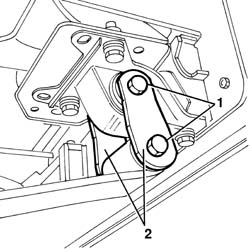
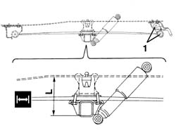
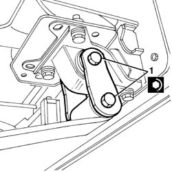

4420A68 SHACKLES FOR ONE L/H OR R/H REAR SUSPENSION LEAF SPRING - REPLACE
- Path
- Procedures > 44 SUSPENSION AND WHEELS > 4420 REAR SUSPENSION > 4420A REAR DAMPERS AND SPRINGS > 4420A68 SHACKLES FOR ONE L/H OR R/H REAR SUSPENSION LEAF SPRING - REPLACE
- Kind
- repair procedure (removal / refitting; the operation number is the code)
- Applies to
- all engines; all production periods
- Interactive page
- https://sloeber94.github.io/elrnDB-fDct/en/#/244001192
Applies to: all engines; all production periods
 Removing
Removing
 Refitting
Refitting- Position the vehicle on the lift.
- Working underneath the vehicle, using a jack, slightly raise the axle on the side the operation is being carried out on.
1. Undo the leaf spring fixing bolts and remove them.
2. Keep the leaf springs.

Applies to: all engines; all production periods
Refitting
Removing- Check that the leaf springs are not damaged.
- Place the leaf springs in position.
- Fit the bolts fixing the leaf springs to the support, then screw in the nuts without tightening them.
- Remove the vehicle from the lift.
1. The definitive tightening of the bolts fixing the leaf springs to the supports should be carried out in design load conditions. Therefore the vehicle should be loaded over the rear axle so that the distance (L) between the buffer plane and the buffer support plane corresponds to the recommended figure (leaf spring in horizontal position).
 | Subject | Value | |
|---|---|---|---|
1 | Rear axle - Ducato 10 - 14 | mm | |
- | Distance "L" between buffer plane and buffer support plane | 192 | |
- | - | Ducato 10 - 14 |
| Subject | Value | |
|---|---|---|---|
1 | Rear axle - Ducato Maxi | mm | |
- | Distance "L" between buffer plane and buffer support plane | 197 | |
- | - | Ducato Maxi |
- The following loads must be applied to the vehicle in the area of the rear axle to obtain the recommended distance.
- Ducato 10 van and lorry: 850 kg
- Ducato 10 panorama: 650 kg
- Ducato 14 van: 1100 kg
- Ducato 14 lorry: 1200 kg
- Ducato Maxi van: 1250 kg
- Ducato Maxi lorry: 1400 kg

Applies to: all engines; all production periods
1. Tighten the nuts fixing the leaf springs to the supports.
 | Value - daNm | Fastening | Component | Ø |
|---|---|---|---|---|
. | 14.2 - 20.6 | Bolt | LEAF SPRINGS | M16x1.5 |

Applies to: all engines; all production periods
- Remove the ballast.